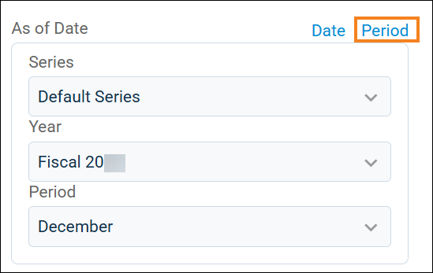

Source: https://rmxhelp.rentmanager.com/Topics/Express/Other/System-Preferences/General-Ledger-Settings.htm
General Ledger Settings (System Preferences)
These system preferences determine the default settings for how Rent Manager handles financial transactions, such as default settings for report options, how general ledger accounts are used, when to use accrual- or cash-basis accounting, and establishing the fiscal year. The general ledger accounts are found in the Chart of Accounts.
Related Privileges
| Group | Privilege | Column |
|---|---|---|
| System | System Preferences | View, Edit |
For more information, refer to Control User Access.
To set these system preferences, do the following:
-
Go to
 arrow_forward
arrow_forward  Administration, then go to .
Administration, then go to .
The System Preferences: General Ledger - Settings page displays. -
Edit the settings as desired. Each setting is described in the headings below.
-
Click Save.
The system preference configuration is updated.
General
This section sets how Rent Manager uses general ledger (GL) accounts when recording financial transactions. Each option is described below.
| Option | Description | |||||
|---|---|---|---|---|---|---|
|
Display GL Accounts with full path information |
If checked, GL subaccounts are preceded by their parent account in the following areas of Rent Manager:
|
|||||
|
G/L Start Date |
The starting date for your general ledger when Rent Manager begins to track the details of your finances and transactions. By default, Rent Manager ignores all transactions prior to the start date, such as in reports. More Information Transactions that occurred prior to this date are accounted for in your beginning balances. For more information, refer to Beginning Balances. |
|||||
|
Parent Accounts |
Determine if or how parent accounts can be used for financial transactions. Each option is described below. |
|||||
|
||||||
|
Show account numbers |
If checked, the account numbers associated with your GL accounts display in various areas of Rent Manager, such as financial reports, checks, bills and so on. If unchecked, only the GL account names display. |
|||||
|
Turn off chart account numbering suggestions |
If unchecked, Rent Manager automatically populates the next GL number available when creating new GL accounts in the chart of accounts. To prevent Rent Manager from populating the next available number, check this option. Checking this option is useful for accounting setups that use a numbering system that differs from Rent Manager's standardized system (3000-3999 for equity accounts, 4000-4999 for income accounts, and so on). |
Fiscal Year
This section determines the date range of the system-wide fiscal year. The Start date marks when the fiscal year begins, and the End date determines the last day of the fiscal year.
More Information
You can override this system fiscal year for each property on the property's details page in the Fiscal Year tile. For more information, refer to Property Details (Page).
Basis
This section determines the default accounting basis selected in various areas of Rent Manager. In cash-basis accounting, transactions are recorded when cash is paid or received and affect only reports generated on cash basis, and unpaid invoices and expenses are not included in financial reports. In accrual-basis accounting, transactions are recorded as the charges are incurred and affect only reports generated on accrual basis, and unpaid invoices and expenses are included in financial reports.
Each option is described below.
| Option | Description |
|---|---|
|
Default basis for AR & AP journals |
When creating journal entries that use the Accounts Payable or Accounts Receivable general ledger (GL) accounts, this setting determines which option populates by default in the Basis field: Cash, Accrual, or Both. Related Preferences The GL accounts used as your Accounts Payable or Accounts Receivable accounts are established in your system preferences. For more information, refer to General Ledger System Accounts (System Preferences). |
|
Default basis for journal entries |
When creating journal entries, this setting determines which option populates by default in the Basis field: Cash, Accrual, or Both. |
|
Default basis for reports |
When generating reports, this setting determines if the Cash or Accrual report option defaults to have Cash or Accrual selected. This report option can be changed when generating the report as needed. |
Future Date Warning
This section determines when Rent Manager provides a warning pop-up to alert the user that they are selecting a date too far in the future. Check or uncheck any of the available options described below.
| Option | Description |
|---|---|
|
Warn if a charge, payment, or deposit is in the future |
If checked, warns the user if they date a charge, payment, or bank deposit a specified number of days in the future. Then in the field available, enter the number of days in the future to start alerting. For example, if you enter 1 and a user dates a charge for tomorrow, the user receives a pop-up warning. |
|
Warn if a check, bill, or credit card is in the future |
If checked, warns the user if they date a check, bill, or credit card transaction a specified number of days in the future. Then in the field available, enter the number of days in the future to start alerting. For example, if it's December 1 and you enter 30 and a user dates a check for January 1, the user receives a pop-up warning. |
|
Warn if a journal is in the future |
If checked, warns the user if they date a journal entry a specified number of days in the future. Then in the field available, enter the number of days in the future to start alerting. For example, if you enter 7 and a user dates a check for a week from today, the user receives a pop-up warning. |
Settings
This section determines additional settings for how to record or report your financial transactions. Each option is described below.
| Option | Description |
|---|---|
|
Enable Accounting Periods |
Check to turn on accounting periods in Rent Manager, allowing users to define monthly, quarterly, semiannual, or custom periods for tracking finances. For more information, refer to Set Up Accounting Periods. To default the date report options to accounting periods when generating financial reports, check the Default to accounting periods for financial reports option.
 |
|
Record cash preallocations as a liability (applies to new payments and credits) |
Determine how allocated prepayments to specific charge types on a cash basis are recorded. If enabled, allocated prepayments are recorded in the account selected in the Cash Prepay Liability field in system preferences. Otherwise, allocated prepayments are recorded in the GL account linked to the charge type to which the prepayment was allocated. For more information, refer to General Ledger System Accounts (System Preferences). Warning Changes made to this system preference apply only to future cash prepayment payments and credits. |
| Record accrual prepayments as a liability (applies to new payments) |
Determine how prepayments on an accrual basis are recorded. If enabled, accrual prepayments debit (increase) the Undeposited funds account and credit (decrease) the offsetting Accrual prepay liability account specified in system preferences. Otherwise, accrual prepayments debit (increase) the Undeposited funds account and credit (decrease) the Accounts receivable for accrual method specified in system preferences. For more information, refer to General Ledger System Accounts (System Preferences). Warning Changes made to this system preference apply only to future accrual prepayment payments and credits. |
|
Record cash credit reallocations when only income accounts and/or expense accounts are used (applies to new credits). |
Determine if credits issued to tenants display on financial reports on a cash basis. If enabled, tenant credits (negative charges posted on a tenant’s account) linked to income or expense accounts display when running financial reports on a cash basis. Otherwise, tenant credits do not create a financial transaction when running reports on a cash basis. Warning Enabling or disabling this system preference only impacts future transactions. For example, if credits are added while the option is disabled and later the option is enabled, those credits added prior to the change do not display on financial reports. |
|
Roll "Net Income" from prior fiscal years to "Retained Earnings" on the balance sheet |
This option determines how net income from prior fiscal years is handled for reporting purposes only—it does not move money between chart accounts. If enabled, net income from previous years displays on financial statements, such as the Balance Sheet and Trial Balance, as Retained Earnings. Otherwise, net income from previous years is reported in the individual income and expense accounts and is not rolled over into Retained Earnings. Related Preferences The default Retained Earnings rollover account is a general ledger system account established in system preferences. For more information, refer to General Ledger System Accounts (System Preferences). |